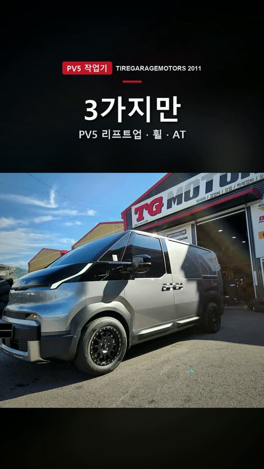
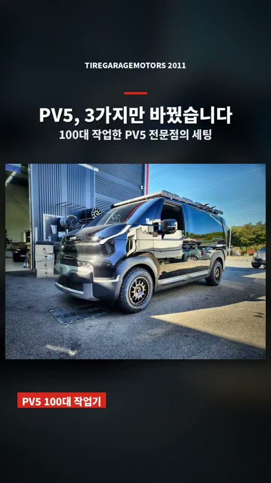

자주 묻는 질문 · 마지막 수정 2026-11-28 · 타이어게러지모터스 (남양주 진접, 2011년부터 튜닝·정비)
PV5 리프트업, 빅풋 스프링으로 몇 인치 올려야 하나요?
왜 PV5는 뒤가 처지나요?
PV5는 짐을 싣거나 시간이 지나면 뒤쪽이 내려오는 뒷처짐이 생길 수 있어요. 업무용·캠핑용으로 짐이 늘 실려 있으면 차고가 낮아지고, 방지턱에서 꿀렁거리거나 하부가 긁히기도 해요. 빅풋 스프링으로 바꾸면 차고를 되찾고 하중을 버티는 힘이 좋아져요.
세팅 예시 (실제 작업)
- 카고 · 전륜 1인치 · 후륜 1.5인치 차고 보강
- 카고 · 빅풋 스프링 1.5인치 · 2인치 + 메소드 블랙 휠 + 한국타이어 AT2 익스트림
- 카고 · 2인치 리프트업 + 한국타이어 AT2 익스트림
- 카고 · 상시 적재 200kg 후륜 처짐 개선 및 차고 높이기
- 캠핑카 제작 전 차고 보강 · 방지턱 꿀렁거림과 적재 하중 개선
같이 많이 하는 작업
- 휠: METHOD 16인치(블랙·실버), 영국 FOX ADV 16인치
- 타이어: 캡센 AT 215/70R16, 트라이앵글 AgileX AT TR292 215/70R16, 레이다 레니게이드 AT 215/65R16, 한국 AT2 익스트림·RF12
- 리프트업 뒤 3D 얼라인먼트로 마무리
자주 묻는 질문
- PV5 리프트업은 하루 만에 되나요?
- 보통 하루 안에 끝나요. 스프링 교체, 휠·타이어 장착, 얼라인먼트까지 한 번에 해요. 재고와 시간은 전화로 먼저 확인해 주세요.
- 카고와 패신저는 세팅이 다른가요?
- 달라요. 모델과 용도에 따라 맞는 스프링과 인치가 달라서, 예약할 때 정확한 모델(카고·패신저)과 평소 적재 무게를 알려주세요.
- 리프트업 뒤 얼라인먼트를 해야 하나요?
- 해야 해요. 차고가 바뀌면 바퀴 각도가 달라져서, 작업 뒤 3D 얼라인먼트까지 보고 출고해요.
관련 작업 영상

PV5 카고 휠 교환 · AT 타이어 장착, 영국 FOX 16인치 + 215/70R16
PV5 카고, 휠 교환 · AT 타이어 장착했습니다. 하중 1,500kg부터 확인했습니다. · 순정 휠커버를 떼고 영국 FOX 정품 휠로 교환, AT 타이어를 장착한 PV5 카고입니다. 차는 그대로, 휠 · 타이어만 바꿨습니다. · FOX 정품 휠 - 1996년부터 이어온 영국 휠 브랜드. 16인치 무…

PV5 휠 · 짐 싣는 차라면 하중부터, 영국 FOX 정품 ADV 16인치 1,500kg
PV5 휠, 짐 많이 싣는 차라면 바꿔도 될까요? · 디자인보다 하중부터 확인했습니다. 영국 FOX 정품 ADV 16인치, 4본 세트 매장에 들어왔습니다. · FOX 정품 휠 - 1996년부터 이어온 영국 휠 브랜드, 정품 박스 그대로 입고

PV5 3가지만 바꿨습니다, 리프트업 · 휠 · AT
PV5, 3가지만 바꿨습니다. · 리프트업 - 스프링 교체로 차고 업, 장착 뒤 얼라인먼트 · 휠 - PV5 사이즈 · 옵셋에 맞는 휠

PV5 리프트업 · METHOD 16인치 휠 · AT 타이어, 3가지만 바꿨습니다
PV5, 3가지만 바꿨습니다. · 리프트업 · 빅풋 스프링 앞 · 뒤 · 휠 · METHOD 16인치

PV5 카고·패신저 100대째 리프트업. 빅풋 스프링 + METHOD 16인치 + AT 타이어, 남양주 진접에서 하루 만에…
순정 PV5 입고 · 빅풋 리프트 스프링으로 앞·뒤 차고 UP · METHOD 16인치 휠 + 오프로드 타이어 (레이다 · 한국 RF12 · 캡센 중 선택)
PV5에 리프트업을 하면?
지금까지 떼어낸 순정 스프링만 이만큼 쌓였습니다. · 수많은 리프트업 스프링 교체 경험으로, PV5는 확실하게 압니다. · 빅풋 리프트 스프링으로 앞 · 뒤 차고 UP
PV5 카고·패신저 100대째 리프트업. 빅풋 스프링 + METHOD 16인치 + AT 타이어, 남양주 진접에서 하루 만에…
순정 PV5 입고 · 빅풋 리프트 스프링으로 앞·뒤 차고 UP · METHOD 16인치 휠 + 오프로드 타이어 (레이다 · 한국 RF12 · 캡센 중 선택)
 ▷ 5727
▷ 5727PV5에 리프트업을 하면?
지금까지 떼어낸 순정 스프링만 이만큼 쌓였습니다. · 수많은 리프트업 스프링 교체 경험으로, PV5는 확실하게 압니다. · 빅풋 리프트 스프링으로 앞 · 뒤 차고 UP
작업 후기 (네이버 블로그)
- 기아 PV5 카고 휠타이어 교체! FOX 16인치 휠 + 캡센 AT 215 70 16 장착 후기 (남양주 타이어게러지모터스) 2026-11-26
- 기아 PV5 카고 빅풋스프링 장착! 상시적재 차량 보강 작업｜남양주 타이어게러지모터스 2026-11-25
- 잠실 PV5 카고 빅풋스프링 장착! 적재량에 맞춘 최적의 차고 세팅 2026-11-24
- PV5 카고 캠핑카 빅풋 강성스프링 장착! 방지턱 꿀렁거림과 적재 하중 개선 2026-11-23
- 기아 PV5 카고 AT타이어 장착! 캡센 올터레인 215/70R16 남양주 타이어게러지모터스 2026-11-19
- PV5 카고 빅풋스프링 1.5인치·2인치 작업! 메소드 블랙 휠 & 한국타이어 AT2 익스트림 장착｜남양주 타이어게러지모터스 2026-11-16
- 기아 PV5 카고 빅풋스프링 장착! 적재 시 차고 처짐 및 하부 긁힘 개선 2026-11-13
- PV5 카고 빅풋스프링 장착! 상시 적재 200kg 후륜 처짐 개선 및 차고 높이기 2026-11-10